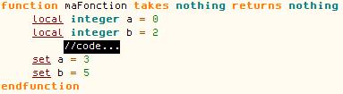
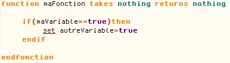

Si vous lisez ce tuto , vous devez certainement savoir ce qu'est Warcraft III. En fait, c'est encore mieux si vous avez Warcraft III... et tant qu'à faire, il vous faudrait, en plus, (parce que notre mieux, c'est jamais assez !) avoir Warcraft III The Frozen Throne, l'extension du jeu !
Beuh ! Flamber 30 piastres là-dedans ? :colere2:
Ça a de l'air à ça. Heureusement, vous avez aussi le droit de jouer au jeu que vous aurez acheté. :p
Ah ! Oui, aussi, j'utilise la version anglaise du World Editor. D'où les anglicismes. Je préfère vous en avertir à l'avance. Il est également très préférable, pour une bonne compréhension, de parler anglais plus ou moins couramment, mais ce n'est pas nécessaire.
Bon, maintenant qu'on a brisé la glace, je vais vous expliquer. Le JASS est le langage de programmation utilisé par le World Editor de Warcraft III. Le JASS est utilisé dans le Trigger Editor et est souvent utilisé par ceux qui sont habitués à la programmation ou bien qui n'aiment pas le fonctionnement du GUI du Trigger Editor.
Peux-tu parler français ?...
D'accord. Le... JASS est le langage de... l'Éditeur de Mondes pour ceux qui n'aiment pas... l'IUG de... l'Éditeur de Déclencheurs... >_
Bon, vous l'aurez compris, tout ça est tellement mal traduit et/ou difficile à traduire que je préfère dire les termes techniques en anglais.
Un GUI est l'interface qui "remplace" le code de programmation, dans ce cas-ci. Lorsque vous ouvrez votre Trigger Editor, vous avez du GUI.
Sur cette image, la partie GUI du Trigger Editor est entourée de rouge. C'est la partie qui va changer lorsque nous allons commencer à coder.
Bref, ceux qui connaissent un langage de programmation X, ou ceux qui n'aiment pas le Trigger Editor pour une raison Y, ou ceux qui trouvent que le code avec de la couleur dedans, c'est joli (comme moi, par exemple) devraient apprendre le JASS.
Les origines du JASS
En fait, plusieurs raisons portent à penser que le terme JASS est un acronyme inventé de toutes pièces pas les JASSers eux-mêmes. Par exemple, dans le World Editor, on fait toujours référence au JASS en tant que Custom Text. On cherche toujours où Blizzard a décidé d'appeller ce langage le JASS, même si cet événement ne s'est jamais produit.
En tout cas, Blizzard a créé ce langage pour permettre au mappeur de créer une map beaucoup plus efficace, soit plus rapide d'exécution. Cependant, Blizzard n'a pas (ou presque) créé une communauté autour de ce langage. C'est pourquoi ce tutoriel est rédigé, après une durée bien trop longue de 9 ans, 9 ans durant lesquels le JASS a connu un épanouissement incroyable.
C'est le fun, c'est le fun... un langage de script dans Warcraft... mais c'est pas compliqué pour rien ? Je veux dire, imagine, j'ai pas envie de programmer, moi, quand j'ai un Trigger Editor qui marche fârpaitement bien !
En effet, certains pourraient trouver que le JASS est inutile. Cependant, ce langage présente de nombreux avantages plus ou moins subtils qui peuvent être utiles lorsqu'on connaît les notions intermédiaires et avancées de ce langage. Voici une liste des plus importants :
Meilleure lisibilité ;
Moins d'espace en mémoire est nécessaire ;
L'éxécution est plus rapide et efficace ;
Diminution du lag ;
Certains bugs dans le JASS permettent de créer des fonctions impossibles à utiliser en GUI ;
Création de fonctions ;
Meilleur contrôle des fonctions utilisées.
Et là, j'en passe. Mais, surtout, le plus important, selon moi, c'est qu'on n'a pas besoin de cliquer partout comme des déchaînés, d'ouvrir 5 fenêtres différentes en même temps pour une seule action, sans même pouvoir faire autre chose en même temps... ça peut être très "gossant", "chien", "fatiguant"...
N'avez-vous jamais trouvé que le GUI est un peu... énervant ? Voyez-vous, même si on sait déjà à l'avance quelle action on veut ajouter, on doit tout de même faire toutes les étapes complexes pour appeler une fonction, choisir quel type de variable on veut utiliser... ce qui nous prendrait 30 secondes en GUI peut être une affaire de 5 secondes en JASS. Sans parler du fait que vous allez vous user le poignet et la main droite (ou gauche) à force de devoir cliquer et de devoir regarder constamment les fenêtres qui apparaîtront à votre écran, travailler de manière saccadée, si vous faites du GUI.
Par exemple, pour faire une simple action qui va tuer une unité, on doit faire New Action > Unit > Kill > Picked Unit, alors qu'en JASS, on n'a qu'à écrire "call KillUnit( GetEnumUnit( ) )" et on tue notre unité. En GUI, on cherche la fonction dans une liste mal ordonnée et mélangeante, sans fin et mal classée.
Cependant, rien n'est tout noir, rien n'est tout blanc. Si le GUI est plus lent à utiliser une fois appris, il en va tout autrement de l'apprentissage lui-même. Le JASS peut prendre des mois à apprendre et on ne le connaîtra jamais de fond en comble. On ne peut se rappeler par coeur les plus de 10 000 lignes de codes qui contiennent les fonctions qu'on utilise. On apprend par l'expérience, on regarde souvent quelle fonction on devrait utiliser pour faire quelque chose... mais, au moins, une fois qu'on la connaît, cette fonction, elle est plus rapide à intégrer dans son code par la suite. Voici une liste des désavantages du JASS :
Même si le JASS est plus facile de lecture, on peut s'y perdre, au début ;
Apprentissage long ;
Approfondissement très long ;
Ouvrages de référence souvent consultés ;
L'apprentissage se fait par l'expérience(à vous de décider si c'est bon ou mauvais).
Malgré tout, cela vaut la peine d'apprendre le JASS. Après tout, ce tuto n'existerait pas, si ce n'était pas le cas ! :p
Lorsque j'ouvre mon Trigger Editor, je ne vois pas de code...
Oui, c'est vrai, il faut convertir la partie GUI de vos Triggers en code JASS. Notez que cette action est irréversible (à moins de faire CTRL+Z :p ). Alors, nous allons voir comment changer un Trigger de tous les jours en JASS de tous les jours.
Créez une nouvelle map et détruisez-moi ça, le script de Melee Initialization ! Bon, maintenant que c'est fait, créez un nouveau Trigger (CTRL+H). Vous devriez avoir quelque chose comme ça:
Convertissez-moi donc ça en JASS, tant qu'à faire ! Edit > Convert to Custom Text
Ha ! C'est tellement beau que j'en pleure ! :'(
function Trig_Untitled_Trigger_001_Actions takes nothing returns nothing
endfunction
//===========================================================================
function InitTrig_Untitled_Trigger_001 takes nothing returns nothing
set gg_trg_Untitled_Trigger_001 = CreateTrigger( )
call TriggerAddAction( gg_trg_Untitled_Trigger_001, function Trig_Untitled_Trigger_001_Actions )
endfunction
D'accord, maintenant, si vous pleurez, ce ne sera probablement pas pour la même raison que moi, mais... c'est le résultat qui compte ? :ange:
Analysons notre code
Tout d'abord, on va voir le paragraphe après la grosse ligne en commentaire.
//===========================================================================
function InitTrig_Untitled_Trigger_001 takes nothing returns nothing
set gg_trg_Untitled_Trigger_001 = CreateTrigger( )
call TriggerAddAction( gg_trg_Untitled_Trigger_001, function Trig_Untitled_Trigger_001_Actions )
endfunction
D'accord... rien à comprendre, hein ? Eh bien, nous allons commencer par le commencement :
function InitTrig_Untitled_Trigger_001 takes nothing returns nothing
endfunction
Pour ceux qui connaissent un peu l'anglais, un langage de programmation ou les deux, vous aurez compris que ceci crée une fonction qui ne prend aucune valeur et qui ne retourne rien. La dernière ligne met une fin à cette fonction ! Wahou !
Les prochaines lignes sont probablement plus weird pour ceux qui connaissent un langage de programmation :
set gg_trg_Untitled_Trigger_001 = CreateTrigger( )
What the... fudge ? o_O
Eh bien, en JASS, dès qu'on doit donner une valeur à une variable, on utilise le mot-clé set. Ensuite, on doit donner le nom de la variable, puis assigner une valeur. On doit ensuite changer de ligne. gg_trg_Untitled_Trigger_001 est donc une variable.
Pourquoi elle s'appelle comme ça, la variable ? De quel type est-elle ?
La variable s'appelle comme ça pour une raison que nous verrons plus en profondeur dans le chapitre sur les variables. Son type est le type trigger.
Ah ! Je devine ce que vous pensez... le type trigger n'existe pas, hein ? Eh bien, oui ! En JASS, d'ailleurs, il y a plusieurs types de variables plutôt bizarres. Par exemple, une variable peut être de type :
player race unit location attacktype ability Et bien d'autres...
player
race
unit
location
attacktype
ability
call TriggerAddAction( gg_trg_Untitled_Trigger_001, function Trig_Untitled_Trigger_001_Actions )
Cette ligne de code devrait vous sembler plutôt obscure, elle aussi. Si vous arrivez à la déchiffrer, alors là, vous êtes forts !
Donc, forcément, on appelle une fonction. Cette fonction, selon mon anglais médiocre, ajoutera une Action au Trigger (add, ajouter...). Maintenant, les valeurs passées à la fonction sont de type... trigger et... fonction ? En fait, on appelle ceci une valeur de type code : on envoie la référence d'une fonction qui ne prend aucun paramètre à l'intérieur d'une autre fonction. C'est le cas de function Trig_Untitled_Trigger_001_Actions, qui est une valeur de type code.
Logiquement, la fonction appelée est la fonction Trig_Untitled_Trigger_001_Actions, qui fait... voyons voir... rien ! Mais oui, c'est logique, car notre Trigger à la base ne faisait rien, lui non plus !
Nous allons maintenant arranger notre code pour qu'il ait l'air présentable et lisible.
Commencez par changer le nom des fonctions pour des noms plus... significatifs.
Mais, mais, mais ! J'ai changé le nom des fonctions, mais... ça ne marche pas ! Regardez mon code !
function actions takes nothing returns nothing
endfunction
//===========================================================================
function init takes nothing returns nothing
set gg_trg_Untitled_Trigger_001 = CreateTrigger( )
call TriggerAddAction( gg_trg_Untitled_Trigger_001, function actions )
endfunction
En effet, ça ne marche pas, pour une raison toute simple, mais, pour la comprendre, il faut savoir comment fonctionne le code d'une carte Warcraft III.
Le code de la map est divisé en deux parties : une partie est constituée des Triggers, et l'autre partie contient le code qui est caché à celui qui fait la map. Certains logiciels, que nous verrons plus tard, nous permettront d'aller modifier ce code. Pour l'instant, il est intouchable, immortel, immunisé et en situation de force. Nous sommes impuissants, incapables, inutiles, des moins que rien...
Bref, ce code-là, on n'y touche pas encore. Pour faire simple, cependant, on pourrait dire que ce code va se modifier avec le nom de notre Trigger. Donc, le mieux qu'on peut faire, c'est changer le nom du trigger pour TEST, par exemple. Il faudra ensuite remplacer le Untitled_Trigger_001 dans le code par TEST :
function actions takes nothing returns nothing
endfunction
//===========================================================================
function InitTrig_TEST takes nothing returns nothing
set gg_trg_TEST = CreateTrigger( )
call TriggerAddAction( gg_trg_TEST, function actions )
endfunction
Voilà ! Nous avons déjà un beau code présentable !
Bon, j'ai effleuré le sujet des variables dans le premier chapitre, alors je vais expliquer plus en détail les types de variables, leur utilisation, et l'avantage principal du JASS, soit l'utilisation de variables locales.
S'il y a un avantage du JASS par rapport au GUI, c'est bien l'utilisation des variables locales. Le JASS permet de déclarer une variable qui ne sera utilisée que dans une fonction, puis qu'on détruira après. Dans le cas du GUI, on ne peut que créer des variables globales et, même si on définit leur valeur comme nulle à la fin d'une fonction, ces variables prennent quand même de l'espace en mémoire, ralentissent le jeu, et tout le tralala...
function maFonction takes nothing returns nothing
local integer a = 0
local integer b
//code...
set a = 3
set b = 5
endfunction

Vous aurez compris le principe, je crois.
Libération de Mémoire
Si une variable de type non-natif (voir plus loin dans ce chapitre) est utilisée dans une fonction, il est important de lui enlever la valeur assignée à la fin de la fonction, surtout dans le cas d'une variable globale. (udg_unit est une variable globale)
function maFonction takes nothing returns nothing
set udg_unit=GetTriggerUnit( )
call autreFonction( udg_unit )
set udg_unit = null
endfunction
Si, un jour, pour une raison quelconque, vous décidiez de lire le code de votre map avant de vous coucher le soir, vous tomberiez probablement sur ceci dans le début du fichier war3map.j :
Une représentation assez simple de ce que pourraient représenter les variables globales d'une map... assez simple ! :p Ce que vous voyez ici s'appelle un "globals block" car, en bref, c'est un bloc, dans lequel on retrouve les globals ! (remarquez globals et endglobals)
Les variables globales peuvent être utilisées dans n'importe quelle fonction.
Nom des globals
gg_var
Si le nom d'une variable est gg_nomDeLaVariable, alors c'est qu'il s'agit d'une :
Generated Global
C'est-à-dire une global créée au-to-ma-ti-que-ment selon plusieurs facteurs. Entre autres, les régions que vous définissez dans le World Editor sont stockées dans des variables globals dont le nom commence par gg.
udg_var
Lorsqu'il y a la présence du préfixe "udg", c'est un signe que votre variable est une :
User Defined Global
Les UDG sont, très précisément, définies par vous-même. :ange: En fait, si vous allez dans le Trigger Editor et faites CTRL+B, vous allez les voir, ces UDG. N'est-ce pas génial ? Vous pouvez vous-mêmes déclarer vos variables de cette manière et, pour l'instant, ce sera notre seule façon de déclarer une variable globale.
Peu importe le nom que vous utilisez pour votre variable en faisant CTRL+B, vous devez ajouter udg_ devant ce nom, dans le code.
Comme en C, comme en C++, comme en C#, comme en JavaScript, comme en ActionScript (énumération sans fin), les array sont des "tableaux" de variables. Voici un exemple concret, que vous avez probablement vu un million de fois :
index | | valeur 0 100 1 2 2 30 3 255 4 127
index |
| valeur
0
100
1
2
2
30
3
255
4
127
C'est une représentation plutôt simple de ce qu'est un tableau. On a une variable et un index, sous la forme variable[i]. Chaque index a une valeur assigné à cet index.
En JASS, on doit déclarer un array de la même manière qu'on déclare une variable, mais avec le mot-clé "array" entre le type et le nom de la variable :
function maFonction takes nothing returns nothing
local integer array var
set var[0]=100
set var[1]=2
set var[2]=30
set var[3]=255
set var[4]=127
endfunction
Il existe de multiples types de variables et de valeurs à transmettre à des fonctions dans le JASS. Voici une liste des principaux types de variables. Pour une liste complète, voir jass.sourceforge.net.
Variables Natives
Les variables natives sont les variables "de tous les jours", qu'on retrouve dans presque n'importe quel langage de programmation.
real
Stocke un nombre décimal.
integer
Stocke un nombre entier.
Le type integer peut aussi désigner un type d'unité, de sort, d'item, de buff... dans ces cas-là, ce type sera un code de 4 caractères entre apostrophes ', et non entre guillemets ". Le premier caractère d'un de ces codes indique le type ou la race. Par exemple, les sorts commencent par 'A et les unités de race humaine par 'h. Les trois autres caractères sont spécifiques et uniques au type d'unité, d'item, de sort... par exemple, 'hfoo' est le code de l'unité footman. Les unités, sorts, etc. définis par l'utilisateur ont des numéros à la place des 3 derniers caractères. Par exemple, la première unité de race humaine créée aura pour code 'h000'.
Pour trouver le code d'une unité ou un autre type, on doit aller dans le Object Editor et trouver l'unité en question. On fait ensuite CTRL+D. Dans le menu de gauche, les noms sont alors remplacés par les identifiants des types. On appuie encore une fois sur CTRL+D si on veut retourner en mode normal.
string
Stocke une chaîne de caractères. Ceux qui n'ont fait que du C ne sont peut-être pas familiers avec ce type. Les string sont toujours entre guillemets ", jamais entre apostrophes '. Si on devait avoir un guillemet dans un string, on mettrait un backslash \ juste avant, pour faire \". Si on doit écrire un backslash dans notre string, on le doublera, pour faire \\.
boolean
Stocke true ou false. (On peut également l'écrire TRUE ou FALSE)
code
Vous vous rappelez du code ?
:diable: <=== Plus gentil que le type code
Ce type ne peut être déclaré en array. En aucun cas. Il conserve une référence qui renvoie à une fonction. On s'en sert souvent pour appeler une fonction dans une fonction. La fonction à laquelle il renvoie ne peut prendre aucun paramètre. Aucun. Jamais. Impossible. Pas moyen. Oubliez ça. Vous comprenez pourquoi il est encore plus méchant que le Diable ?
Pour créer une variable de type code, on doit mettre le mot-clé function devant le nom de la fonction. Par exemple, on peut faire ceci :
local code c = function maFonction
Les types non-natifs ou handle
Tous les types spécifiques à Warcraft III entrent dans cette catégorie. Ce sont les pointeurs en JASS. On y retrouve :
unit
Désigne une unité.
group
Désigne un groupe d'unités.
trigger
Désigne un Trigger.
rect
Désigne une région.
ability
Désigne un sort.
widget
Regroupe les item, les unit et les destructable (doodads destructibles, comme les arbres).
handle
Large catégorie qui regroupe la plupart tous les types non-natifs.
handle
widget
player
trigger
unit
destructable
item
X
X
Par exemple, ce code ne détruit pas l'unité de référence de la variable gg_footman :
function maFonction takes nothing returns nothing
set gg_footman = null
endfunction
Ceci, par contre, la détruira :
function maFonction takes nothing returns nothing
call RemoveUnit(gg_footman)
endfunction
Vous aurez probablement remarqué à quel point le World Editor était monotone... tout le texte est en noir... comme sur le Site du Zéro, il n'y a pas de SH :
Syntax Highlighter
Un SH est un logiciel qui va nous permettre d'ajouter de la couleur à mesure qu'on code, comme quand on utilise Notepad++ pour coder en HTML ou Code::Blocks pour coder en C++... Bref, ce sera plus facile de s'y retrouver.
Nous allons voir trois programmes parmi lesquels vous devriez choisir celui qui, selon vous, serait le meilleur.
Malheureusement, ces logiciels ne fonctionnent pas sous Mac OS. La raison pour laquelle il n'y en a pas sur Macintosh est que le World Editor sous Mac rend le code "funky". Au moins, à part des couleurs, ces logiciels n'amènent pas grand-chose.
Jass Shop Pro est plutôt destiné à ceux qui ont plus d'expériences ou qui préfèrent la simplicité de compilation à l'efficacité de codage. Ce programme est également moins esthétique ( selon moi ^^ ). Jass Shop Pro permet de tester la map directement sans avoir le World Editor ouvert. Sauvegarder la map est également plus facile ; avec JassCraft, sauvegarder sa map est toute une besogne !
De plus, Jass Shop Pro ( JSP, pour faire court ) permet de modifier tout le code de la map, en particulier celui qui est caché par le World Editor, ce qui nous sera bientôt nécessaire.
Ce logiciel permet aussi de placer des "signets" parmi les quelques milliers de lignes code de la map, afin de pouvoir s'y retrouver plus facilement.
Ce logiciel contient une liste des fonctions natives, mais pas des variables et constantes incluses dans la map. Son outil de recherche et d'auto-complétion du code en souffre beaucoup.
Du même créateur que JSP, je n'ai aucune idée pourquoi on a créé ce logiciel plutôt que de faire quelques patches pour JSP, mais le résultat est là : JassCraft. Personnellement, je trouve que la coloration a un air plus "cool" et que les couleurs sont plus "hot". Cependant, il faut prendre en considération qu'on ne peut pas tester la map directement dans JassCraft : il faut garder World Editor ouvert, mais, après tout, on le fait de toute façon lorsqu'on ne travaille pas sur les Triggers.
La principale fonction qui a été ajoutée à JSP est que cet éditeur peut modifier les fichiers .mdl. Puisque je n'ai aucune idée du fonctionnement de ce système, cette fonction semble plutôt inutile.
Un des avantages de ce logiciel est que, pour les débutants, il y a un meilleur interface de recherche de fonctions natives. (une fonction native est une fonction intégrée dans le jeu) Aussi, on peut trouver dans la recherche de fonctions natives des constantes et des variables comme des attacktype. Par exemple, on pourrait trouver ATTACK_TYPE_MEDIUM_SLICE en cherchent ATTACK_TYPE, ce qui peut être très utile quand on ne les connaît pas à l'avance.
Ce logiciel est en fait un hack du World Editor, qui vient également avec des additions pour tous les panels, tels l'Object Editor et le Trigger Editor. Ce logiciel a pour avantage qu'on n'a pas besoin de copier/coller le code, car il est déjà dans le World Editor. Ce logiciel est également nécessaire pour le vJASS. Cependant, il présente plusieurs inconvénients :
Ne fonctionne pas avec les versions de Warcraft plus récentes que 1.21b
Le bouton "Test Map" ne fonctionne pas
Le World Editor est ralenti considérablement.
Malgré tout ceci, ce serait tout de même un bon choix, car, une fois son installation complexe terminée, il est facile à utiliser et vous aurez déjà installé tout ce dont vous aurez besoin pour le vJASS.
http://jass.sourceforge.net/ est un site web qui donne non pas un tutoriel sur le JASS, mais plutôt une bibliothèque sur le JASS. Ce site contient toutes les informations dont on a besoin pour trouver des variables constantes, des types de variables, des fonctions... tout !
L'avantage de ce site web est que, si vous pouvez naviguer sur le site du zéro, vous pouvez naviguer sur ce site, alors même les utilisateurs de Macintosh auront un moyen de trouver les fonctions dont ils auront besoin.
Voici un lien direct vers leur API Browser, qui vous permet de visionner le contenu des 3 scripts inclus dans votre map, soit respectivement common.j, common.ai et Blizzard.j. Si vous ne trouvez pas une fonction dans common.j, essayez de la trouver dans Blizzard.j. Notez que common.ai contient seulement les fonctions qui servent à mieux utiliser l'intelligence artificielle de Warcraft III, surtout utiles à ceux qui créent des Campagnes.
Je vais souvent utiliser les scripts retrouvés sur ce site web comme référence. Notez bien que, puisque ces scripts sont trop vieux, il est probable que les numéros de lignes ne soient plus valides. Ce sont les numéros de lignes que j'utiliserai pour mes références, car il s'agit quand même d'un bon point de repère. Il y aura des liens vers ce site web dans la plupart des codes sources que je vous montrerai, pour vous permettre de voir les fonctions en relation avec celle que je vous montre. Veuillez m'excuser de l'invalidité de certaines informations qui pourraient se trouver sur ce site web.
Nous allons voir une partie plutôt importante du JASS et de n'importe quel langage de programmation, car, en JASS, la syntaxe des "blocs" est différente de celle qu'on utilise dans la plupart des langages. Vous allez comprendre...
Si vous connaissez déjà un langage de programmation quelconque, ou parlez un mausus de mot d'anglais, vous saurez que if correspond à une condition. En JASS, sa syntaxe est un genre de bouillie consituée de celles du C, du Visual Basic et du Python. Si vous connaissez un des trois, vous partez avec une longueur d'avance... ou peut-être bien des habitudes à perdre.
function maFonction takes nothing returns nothing
if(maVariable==true)then
set autreVariable=true
endif
endfunction

Comme vous pouvez le voir, il y a quelques petits détails à remarquer :
Tout d'abord, au lieu des accolades { } qu'on utilise normalement en C ou en C++ pour un bloc, on utilise then et endif.
L'opérateur utilisé ici doit être un ==, contrairement au Visual Basic qui reconnaîtrait un = unique.
else
Le else, ou plutôt, vrai quand la condition précédente est fausse, s'utilise comme suit :
function maFonction takes nothing returns nothing
if maVariable then
set autreVariable=true
else
set autreVariable=false
endif
endfunction
Choses à noter :
Le else se trouve avant le endif
Il n'y a pas de then dans un else
elseif
Le elseif dit : «Si la condition précédente est fausse, vérifions celle-ci...»
Par exemple, si je voulais décider de tuer une unité si maVariable est true ou de la retirer si maVariable n'est pas true et que autreVariable est true, je ferais comme ceci :
function maFonction takes nothing returns nothing
if maVariable then
call KillUnit(gg_footman)
elseif autreVariable then
call RemoveUnit(gg_footman)
endif
endfunction
La façon dont on se sert du elseif est la même que celle pour le if. Encore une fois, on doit le mettre avant le endif.
Le loop permet de répéter une action ou plus plusieurs fois, comme le while du C ou du C++.
Voici un exemple de sa syntaxe :
function maFonction takes nothing returns nothing
local integer i = 0 // Notez qu'il faut initialiser la variable dès le début du code, comme toujours.
// code...
loop
exitwhen i==36
//code...
set i=i+1
endloop
endfunction
Les opérateurs sont les "signes" qu'on utilise, dans ce cas-ci, dans les conditions et les boucles. Voici une liste des opérateurs qui nous permettront de faire une meilleure utilisation des conditions en JASS.
"=="
Permet de vérifier si une valeur est égale à une autre.
Utilisation :
function maFonction takes nothing returns nothing
if a==b then
call autreFonction( )
endif
endfunction
"!="
Permet de vérifier si une valeur n'est pas égale à une autre.
Utilisation :
function maFonction takes nothing returns nothing
if a!=b then
call autreFonction( )
endif
endfunction
">","<"
Permet de vérifier si une valeur est plus petite / plus grande qu'une autre.(comme dans vos cours de mathématiques)
Utilisation :
function maFonction takes nothing returns nothing
if a>b then
call autreFonction( )
endif
endfunction
">=","<="
Permet de vérifier si une valeur est plus grande ou égale / plus petite ou égale à une autre valeur.
Utilisation :
function maFonction takes nothing returns nothing
if a>=b then
call autreFonction( )
endif
endfunction
not
La condition est vraie si ce qui suit est faux. Par exemple :
function maFonction takes nothing returns nothing
if not (a==b) then
call autreFonction( )
endif
endfunction
Correspond à :
function maFonction takes nothing returns nothing
if a!=b then
call autreFonction( )
endif
endfunction
and
La condition est vraie si les deux composants sont vrais. Par exemple :
function maFonction takes nothing returns nothing
if a==b and c==d then
call autreFonction( )
endif
endfunction
or
La condition est vraie si un des deux composants est vrai. Par exemple :
function maFonction takes nothing returns nothing
if a==b or c==d then
call autreFonction( )
endif
endfunction
Eh, oui ! La function est également un bloc ! Et d'ailleurs, un bloc function peut avoir de multiples paramètres que nous n'avons pas encore vus !
Par exemple, si je voulais appeler une fonction qui me donnait le carré d'un nombre et le mettait dans une variable, il faudrait faire :
function maFonction takes nothing returns nothing
local integer nombre = carre(3)
endfunction
Mais que contiendrait la fonction carre ? Eh bien, elle devrait ressembler à ceci :
function carre takes integer nombre returns integer
return nombre*nombre
endfunction
Et si on voulait faire une fonction qui multiplie 2 nombres ensemble ? Il faudrait lui passer 2 valeurs différentes...
Dans ce cas-là, il faudrait, en effet, passer 2 valeurs à la fonction. Alors, dans la déclaration de notre fonction, nous mettrions une virgule entre les deux paramètres :
function multiplier takes integer a, integer b returns integer
return a*b
endfunction
Par exemple, ce bout de code n'est pas valide :
function maFonction takes nothing returns nothing
local boolean variable = autreFonction( )
endfunction
function autreFonction takes nothing returns boolean
return true
endfunction
Dans ce cas-ci, le compilateur arrivera à la ligne 2, qui appelle une fonction dont il n'a jamais entendu parler. Pour y remédier, il faudrait faire :
function autreFonction takes nothing returns boolean
return true
endfunction
function maFonction takes nothing returns nothing
local boolean variable = autreFonction( )
endfunction
Bon, c'est bien beau tout ça, mais on va commencer à faire du véritable codage, des choses concrètes, qu'on peut vraiment utiliser en pratique ! Des choses qui marchent ! Des choses qui...
Voici donc un schéma plutôt simple de ce qu'est un Trigger : lorsqu'un Evénement (Event) se produit, si la Condition est vraie, alors on effectue les Actions. Par exemple :
Event
Condition
Action
Une unité meurt
Joueur auquel l'Unité appartient est le Joueur 1 (rouge)
Ajouter 1 Footman au milieu de la map
Même si ce Trigger ne ferait pas grand-chose d'utile, c'est quand même un Trigger. C'est tout simplement un exemple plus concret qui montre comment serait formé un Trigger.
En JASS
Re-regardons notre code de base d'un Trigger.
function Actions takes nothing returns nothing
endfunction
//===========================================================================
function InitTrig_TEST takes nothing returns nothing
set gg_trg_TEST = CreateTrigger( )
call TriggerAddAction( gg_trg_TEST, function Actions )
endfunction
Ça vous dit quelque chose ? Maintenant, nous allons mettre quelque chose au clair...
C'est bien logique, car notre Trigger de départ ne faisait rien. Heureusement, nous allons y remédier.
La seule chose que contient le Trigger que nous avons en ce moment, c'est une Action(qui ne fait rien). Au départ, nous avions la fonction Trig_Untitled_Trigger_001_Actions. Maintenant, nous l'avons renommé Actions et avons changé la ligne 7.
TriggerAddAction
call TriggerAddAction( gg_trg_TEST, function Actions )
La fonction TriggerAddAction ajoute une action au Trigger en question. On doit l'utiliser dans la forme suivante :
call TriggerAddAction( trigger Trigger, function fonction )
Bref, il faut spécifier un trigger auquel on ajoutera une action, et une fonction qui sera la référence de l'Action en question. Notez qu'on doit utiliser le mot-clé function avant le nom de la fonction qu'on doit appeler pour les actions à effectuer ; c'est une valeur de type code. Ça vous dit quelque chose ? ^^
Les Conditions
Il manque une Condition à notre Trigger. On pourrait mettre un if dans notre fonction Actions, le résultat serait le même. Cependant, pour aérer notre code et pour lui permettre d'être plus efficace, on ajoute des conditions au Trigger. Nous allons commencer par faire une fonction qui retourne un boolean et qui servira de condition :
function Conditions takes nothing returns boolean
return true
endfunction
Maintenant, nous allons créer une condition. Juste avant la ligne 7 (le TriggerAddAction), nous allons mettre un TriggerAddCondition.
function InitTrig_TEST takes nothing returns nothing
set gg_trg_TEST = CreateTrigger( )
call TriggerAddCondition( gg_trg_TEST, Condition( function Conditions ) )
call TriggerAddAction( gg_trg_TEST, function Actions )
endfunction
Quels sont les paramètres de la fonction TriggerAddCondition ?
TriggerAddCondition prend un paramètre de type trigger et un paramètre de type boolexpr.
boolexpr ? o_O
Une variable de type boolexpr (de "boolean expression") appelle une fonction qui retourne un boolean. Pour créer une variable de type boolexpr, on doit faire :
local boolexpr variable = Condition( function maFonction )
En clair, la fonction Condition crée un boolexpr, et le second paramètre de la fonction TriggerAddCondition doit être un boolexpr. Notez qu'on aurait pu mettre le Condition dans une variable locale. On doit passer à la fonction Condition une valeur de type code. Oui, rappelez-vous bien, dès le premier chapitre, je vous ai prévenu... le type code est sournois, traître, il attaque par derrière... faites-y très attention, car on ne peut lui passer de paramètres... :colere2:
Dans tous les cas, la fonction à laquelle on fait référence dans notre fonction Condition doit retourner un boolean en fonction de certaines données. Dans la fonction de référence, on mettra un "if" et un "else". Après le "if", on met "return true". Après le else, on met un "return false".
Une deuxième façon de faire les choses, quand on veut un code efficace (mais parfois plus compliqué à écrire, enfin, question de perception...), serait de mettre notre condition directement dans la valeur du retour de la fonction du boolexpr de notre condition. Vous me suivez ? Voilà un exemple :
function Conditions takes nothing returns boolean
return GetUnitTypeId(GetTriggerUnit())=='hfoo'
endfunction
Ce bout de code vérifie si GetTriggerUnit, soit l'unité principale du Trigger, est un footman.
En clair, il y a plusieurs dizaines de fonctions de ce type, et elles prennent toutes des paramètres différents. C'est là que JassCraft ou JSP (mais surtout JassCraft) intervient. Si vous tapez TriggerRegister dans le champ de recherche prévu à cet effet, alors, comme par magie, vous avez une liste des fonctions qui peuvent être utilisées pour ajouter un événement ! :magicien:
Personnellement, je trouve que quelques-unes de ces fonctions peuvent êtres particulièrement utiles, et j'en ai donc fait une courte liste.(la liste complète peut être trouvée un peu partout entre les lignes 1057 et 1333 de common.j)
*Notez que cette fonction nécessite The Frozen Throne
Rendus là, vous êtes mieux de parler anglais. :p
Comment je dis ça, moi, playerunitevent, dans TriggerRegisterAnyUnitEventBJ ?
Les playerunitevent sont un type de variable non-natif. Il y a plusieurs constantes pour ces événements, comme, par exemple, EVENT_PLAYER_UNIT_SPELL_EFFECT. Si vous entrez EVENT_PLAYER_UNIT dans JassCraft (ne fonctionne pas avec JSP), vous aurez une belle petite liste de ces constantes.
Voyons, voyons... nous avons un laboratoire prévu pour le cours de 12h00... vous avez étudié ? Non, bien sûr ! Une chance, vous avez un beau protocole, comme dans votre cours de science au secondaire. Ah, quels beaux souvenirs... :ange:
Votre but est de créer un Trigger qui se déclenchera lorsqu'une unité en attaque une autre. Une condition devra vérifier si l'unité qui attaque est de type footman. Si c'est le cas, on devra tuer l'unité qui attaque.
Il ne vous reste plus qu'à ouvrir le World Editor et à commencer à coder !
1. Créer un nouveau Trigger. 2. Convertir en JASS (Edit>Convert to Custom Text) 3. Renommer les fonctions du Trigger pour des noms plus représentatifs. 4. Créer une fonction qui retourne un boolean. Retourner true si GetUnitTypeId(unit) de GetAttacker( ) est 'hfoo'. Sinon, retourner false. Notez que 'hfoo'doit être entre apostrophes ''. (Whaa ! Termes compliqués, hein ? >_ ) 5. Dans la fonction des actions, appeler KillUnit(unit) avec l'unité qui attaque comme paramètre. 6. Ajouter un événement au Trigger avec TriggerRegisterAnyUnitEventBJ(trigger,playerunitevent), ayant EVENT_PLAYER_UNIT_ATTACKED comme paramètre de type playerunitevent.
La fonction Conditions retourne un boolean avec une condition qui vérifie le type de l'unité qui attaque.
La fonction Actions tue l'unité qui attaque.
La fonction InitTrig_Test initie tout cela (Événement, Condition et Action).
On connaît maintenant la base et plus encore. Cependant, il nous reste encore quelques notions à apprendre avant de vraiment pouvoir se lancer dans la création d'une map. Notez qu'en JASS, comme en n'importe quoi, les connaissances sont acquises par l'expérience. Alors, dès que vous aurez terminé d'apprendre le JASS, je vous suggère d'aller jouer avec tout cela, afin de mieux connaître les fonctions que vous jugez les plus utiles. Chaque programmeur est unique et on ne peut enseigner qu'une manière de faire les chose. Donc, développez vous-même votre talent en map making. Allez faire quelques maps et, si vous avez des questions, envoyez-moi un message. ;)
Si vous vous êtes rendus jusqu'ici tout en comprenant mon tutoriel, c'est soit que je suis un Dieu pour écrire (très peu probable...) ou que vous êtes les meilleurs... peut-être les deux, qui sait. Dans tous les cas, nous entammons maintenant une partie beaucoup plus avancée du JASS. Nous passons désormais à un autre niveau, car, croyez-moi, vous n'avez encore rien vu.
Mais ! Mais ! Mais ! On n'a presque rien vu ! Je ne sais pas comment faire un Trigger qui [insérez l'effet d'un Trigger ici] !
:lol:
En effet, jeune padawan, mais vous saurez que la meilleur manière d'apprendre, c'est par l'expérience. Maintenant que vous connaissez le fonctionnement des Triggers, vous devriez être en mesure de créer presque n'importe quel Trigger. Cependant, puisque vous ne connaissez pas le nom de toutes les fonctions (et si, un jour, vous les connaissez toutes, donnez-moi votre truc), vous devriez utiliser votre logiciel de colorisation syntaxique (soit Jass Shop Pro ou JassCraft) pour les trouver.
Voici donc un problème qui risque de vous arriver souvent et il faut savoir y remédier.
Disons, par exemple, que je veux faire un Trigger qui se déclenche quand le Joueur 1 entre un message dans le chat (on assume qu'il s'agit d'un nombre entier). Pas de condition. Je voudrais que ce Trigger affiche le nombre qu'on a entré, multiplié par deux, dans le jeu.
Voici donc ma structure de Trigger :
function Actions takes nothing returns nothing
local string nombre = GetEventPlayerChatString( )
set nombre = nombre * 2
call BJDebugMsg( nombre )
endfunction
//===========================================================================
function InitTrig_test takes nothing returns nothing
set gg_trg_test = CreateTrigger( )
call TriggerRegisterPlayerChatEvent( gg_trg_test, Player(0), "", false )
call TriggerAddAction( gg_trg_test, function Actions )
endfunction
Si vous avez de l'oeil (alors là, vous en avez probablement plus que moi), vous aurez remarqué que ce code n'est pas valide du tout.
Ce qui ne vas pas, c'est que notre variable est de type string. Or, un string est du texte, et on ne peut multiplier du texte (essayez, pour voir ! :lol: ). Comment y remédier? On pourrait tenter de changer la ligne 2 :
local integer nombre = GetEventPlayerChatString( )
Cependant, on aura tout simplement changé le mal de place. Laissez-moi vous expliquer en détails...
Si nous regardons les modèles des fonctions GetEventPlayerChatString et BJDebugMsg, nous verrons ces deux descriptions :
//===========================================================================
function BJDebugMsg takes string msg returns nothing
local integer i = 0
loop
call DisplayTimedTextToPlayer(player(i),0,0,60,msg)
set i = i + 1
exitwhen i==bj_MAX_PLAYERS
endloop
endfunction
Le second code peut vous sembler un peu plus complexe que le premier, mais c'est presque complètement de la matière déjà vue, et son contenu n'a pas d'importance.
Ce qu'il faut remarquer, c'est qu'un retourne unstring et l'autre prend unstring.
Donc, forcément, on a un problème, car on veut :
Stocker une valeur d'un type string dans une variable de type integer
Passer une valeur de type integer à une fonction, alors qu'il faut un string
Bon, vous l'aurez deviné avec le titre, notre solution, c'est le :
Type Casting
Le type casting permet de changer le type d'une valeur lorsqu'on veut la passer à une fonction où la stocker dans une variable. Reprenons notre exemple, où on devait faire des opérations sur un nombre :
function Actions takes nothing returns nothing
local string nombre = GetEventPlayerChatString( )
set nombre = nombre * 2
call BJDebugMsg( nombre )
endfunction
//===========================================================================
function InitTrig_test takes nothing returns nothing
set gg_trg_test = CreateTrigger( )
call TriggerRegisterPlayerChatEvent( gg_trg_test, Player(0), "", false )
call TriggerAddAction( gg_trg_test, function Actions )
endfunction
Voici donc : on devrait changer GetEventPlayerChatString pour quelque chose qui retournerait la même valeur, mais sous la forme d'integer.
Gné ? o_O
On va tout simplement utiliser une fonction qui sera maintenant notre alliée dans la guerre du JASS, la fonction S2I. C'est une fonction native plutôt simple, mais qui, comme tant d'autres, nous est d'un grand secours.
native S2I takes string s returns integer
Donc, forcément, on devra lui passer un string. Et il nous donnera l'integer qui y correspond ! :waw: (épiphanie)
Voici donc ce qu'on va faire: nous allons utiliser S2I etI2S (I2S changeant un integer en string) pour convertir tout ce qu'on a besoin de convertir.
function Actions takes nothing returns nothing
local integer nombre = S2I( GetEventPlayerChatString( ) )
set nombre = nombre * 2
call BJDebugMsg( I2S( nombre ) )
endfunction
//===========================================================================
function InitTrig_test takes nothing returns nothing
set gg_trg_test = CreateTrigger( )
call TriggerRegisterPlayerChatEvent( gg_trg_test, Player(0), "", false )
call TriggerAddAction( gg_trg_test, function Actions )
endfunction
Et voilà ! On a une fonction qui... fonctionne ! :lol:
Voilà donc, on a réussi à régler notre problème, mais il y a beaucoup d'autres situations semblables dans lesquelles on pourrait se retrouver, et il est important de connaître tous les Type Casters. Ne vous inquiétez pas, ils sont assez simple à mémoriser.
Pronnoncé "S tout Aïl", c'est une abbréviation, comme les autres, pour String to Integer("2" se prononce comme "to"...). Cette fonction permet donc de changer un string en integer.
I2S
Contraire de S2I, permet de changer un integer en string.
R2I, I2R
Change un real en integer ou vice-versa, où R représente un real.
R2S
Change un real en string. Il n'existe pas de contraire à cette fonction.
Wahou! C'est un gros chapitre qui s'en vient, là ! Nous allons voir 2 façons de remplacer les variables globales, dont une que nous allons étudier en profondeur afin de l'exploiter à son plein potentiel !
À la base, un Game Cache devrait renfermer les Héros qu'on doit transférer d'une map à l'autre dans une campagne. En JASS, on l'utilise plutôt que les variables globales : plusieurs variables peuvent avoir le même nom. On peut littéralement détruire une variable, alors que normalement le seul fait qu'un variable existe prend de la place en mémoire. Le game cache peut stocker des boolean, des real, des integer, des string et des unités (et non des variables de type unit, nous reviendrons là-dessus).
Structure du Game Cache
Mission (Catégorie)
Type
Nom
Valeur
"map.w3v"
"X"
string
nom
"Albert"
integer
age
17
real
argent
5.49
"Y"
unit
heros
Arthas
boolean
isLv10
false
integer
damage
35
unit
Unit
Footman
"Z"
string
nom
"Roger"
integer
age
32
Ceci est une exemple d'un (une ?) Game Cache. Celui-ci contient plusieurs variables dans des catégories différentes. Il serait bon de noter que plusieurs variables peuvent avoir le même nom. Si ces variables sont dans deux catégories, elles sont totalement indépendantes l'un de l'autre. Nous avons donc ici la base de la Programmation Orientée Objet : un ancêtre (catégorie / missionKey) et ses descendants (valeurs).
Utiliser un Game Cache
Commencez par créer une variable globale (CTRL+B dans le Trigger Editor) de type Game Cache, et appelez-la... GC, par exemple. Ensuite, créez un Trigger avec cet événement :
Time - Elapsed game time is 0.10 seconds
Vous devriez avoir quelque chose comme ceci :
function Trig_GameCache_Actions takes nothing returns nothing
endfunction
//===========================================================================
function InitTrig_GameCache takes nothing returns nothing
set gg_trg_GameCache = CreateTrigger( )
call TriggerRegisterTimerEventSingle( gg_trg_GameCache, 0.10 )
call TriggerAddAction( gg_trg_GameCache, function Trig_GameCache_Actions )
endfunction
Ce code n'est pas vraiment compliqué, maintenant qu'on s'y connaît, hein ? :soleil:
Tout ce qu'on a, c'est un evénement et une action vide. Dans les actions, maintenant, on devra créer un Game Cache.
function Trig_GameCache_Actions takes nothing returns nothing
set udg_GC = InitGameCache( "map.w3v" )
endfunction
"map.w3v" doit désigner un fichier de campagne qui contiendra les valeurs dans les différentes missions. Il n'a pas besoin d'exister, le World Editor le créera de lui-même. À moins que vous ne vouliez créer une véritable campagne, son nom ne change pas grand chose, car on ne s'en sert plus. Son extension est toujours .w3v
On vient d'initialiser un Game Cache. Quand on n'en aura plus besoin, on devra le détruire...
function Trig_GameCache_Actions takes nothing returns nothing
set udg_GC=InitGameCache("map.w3v")
call FlushStoredGameCache( udg_GC )
endfunction
Et si je voulais seulement détruire une mission en particulier, et non tout le Game Cache ?
Ce n'est pas plus compliqué que ceci :
function Trig_GameCache_Actions takes nothing returns nothing
set udg_GC=InitGameCache("map.w3v")
call FlushStoredMission( udg_GC, "missionKey" ) // game cache, nom de la mission
endfunction
Et si je voulais enlever seulement une valeur dans notre mission, qui est dans notre Game Cache ?
Dépendamment du type de la variable à détruire :
function Trig_GameCache_Actions takes nothing returns nothing
set udg_GC=InitGameCache("map.w3v")
//actions...
call FlushStoredInteger(udg_GC, "missionkey", "int" )// game cache, clé de la mission, nom de la variable
call FlushStoredBoolean(udg_GC, "missionkey", "bool" )
call FlushStoredReal (udg_GC, "missionkey", "real" )
call FlushStoredString (udg_GC, "missionkey", "string")
call FlushStoredUnit (udg_GC, "missionkey", "unit" )
endfunction
Stocker une valeur
Il se peut que vous trouviez tout cela quelque peu répétitif, mais il s'agit tout de même de Store{Type}(gamecache,missionkey,nom,valeur).
function Trig_GameCache_Actions takes nothing returns nothing
set udg_GC=InitGameCache("map.w3v")
call StoreInteger( udg_GC, "missionkey", "int", 3 )//game cache,clé de la mission, nom de la variable, valeur
call StoreBoolean( udg_GC, "missionkey", "bool", true )
call StoreString ( udg_GC, "missionkey", "string", "abc" )
//et ainsi de suite...
endfunction
Retrouver une valeur
C'est bien beau tout ça, mais on doit quand même pouvoir retrouver les valeurs qu'on a stockées dans notre Game Cache. Pour une fois, ce n'est pas pareil pour tous les types de variables (Dieu merci, sinon on mourrait d'ennui).
function Trig_GameCache_Actions takes nothing returns nothing
local integer i
local string s
local real r
local boolean b
local unit u
set udg_GC=InitGameCache("map.w3v")
//ici, on a stocké des variables, mettons...
set i = GetStoredInteger( udg_GC, "missionkey", "i" )//game cache, clé de la mission, nom de la variable
set s = GetStoredString( udg_GC, "missionkey", "s" )
set r = GetStoredReal( udg_GC, "missionkey", "r" )
set b = GetStoredBoolean( udg_GC, "missionkey", "b" )
set u = RestoreUnit( udg_GC, "missionkey", "u", Player(0),0, 0, 0 )
//game cache, clé de la mission, nom de la variable, joueur, x, y, direction
endfunction
Vous avez probablement remarqué que RestoreUnit est beaucoup plus compliqué que les autres fonctions. En effet, cette fonction ne fait pas que stocker la valeur retrouvée dans une variable, elle crée une unité. Voilà pourquoi il nous faut tant de paramètres.
Voilà aussi pourquoi il ne s'agit pas d'une variable de type unit : ce n'est pas un pointeur, mais bien l'unité en tant que tel, qui est stockée dans le Game Cache. Ainsi, on ne peut stocker un pointeur unit (ou n'importe quel autre handle) et pouvoir le retrouver. Que faire ? Eh bien, on aura besoin de...
Cette fonction, qui est créée par l'utilisateur, utilise un bug qu'on appelle couramment le returnreturn bug.
Cette fonction prend un handle et retourne un integer. Son contenu est vraiment bébé-fafa :
function H2I takes handle h returns integer
return h
return 0
endfunction
Pourquoi y a-t-il deuxreturn ? C'est bête, une fonction ne peut retourner qu'une valeur !
En fait, le compilateur ParseJASS (qui vérifie la syntaxe dans JassCraft et Jass Shop Pro) trouvera une erreur dans le return h, car on veut retourner un integer alors qu'il s'agit d'un handle. Alors il continuera et trouvera un return 0. 0 étant un entier, il sera satisfait. On pourrait l'enlever, et la map fonctionnerait encore farpaitement.
Cette fonction retourne l'identifiant unique d'un pointeur handle. Il n'y en a jamais deux qui ont le même identifiant, car il est... unique ! :lol:
Utilisation
Si on veut stocker le pointeur du handle, on le stockera sous la forme d'integer dans notre Game Cache. Ensuite, on doit le retrouver comme n'importe quelle variable et le reconvertir en handle ou en unit, player, etc.
function H2I takes handle h returns integer
return h //handle 2 integer
return 0
endfunction
function I2H takes integer i returns handle
return i //integer 2 handle
return null
endfunction
function H2U takes handle h returns unit
return h //handle 2 unit
return null
endfunction
function maFonction takes nothing returns nothing
local unit u = GetTriggerUnit( )
local unit uu = null
set udg_GC=InitGameCache( "map.w3v" )
call StoreInteger( udg_GC, "m", "u", H2I( u ) )
set uu = H2U( I2H ( GetStoredInteger( udg_GC, "m", "u" ) ) )
endfunction
Pour des raisons de simplicité, on regroupe généralement H2U et I2H en une seule fonction :
function GetStoredUnit takes gamecache gc,string mission,string key returns unit
return( GetStoredInteger( gc, mission, key ) )
return null
endfunction
C'est bon, je peux transférer des variables de tous types dans mon Game Cache, mais qu'est-ce que j'en ai à cirer ?
Vous rappelez-vous, dans le premier chapitre, j'avais dit que...
Citation : L'illustrissime Ashlebede, il y a de cela plusieurs décennies...
Puisque le type code est notre ennemi, nous devons trouver une manière de le contourner. Dans plusieurs cas, on devra appeler une fonction en utilisant une variable de type code. Dans ces cas-là, on aurait deux options pour passer des valeurs à la seconde fonction :
Tant qu'à avoir commencé à utiliser les amis de H2I, nous allons utiliser tous ses amis, sans distinction aucune, notamment de race, de couleur, de sexe, de langue, de religion, d'opinion politique ou de toute autre opinion, d'origine nationale ou sociale, de fortune, de naissance ou de toute autre situation.(1)
1 : Déclaration Universelle des Droits de l'homme.
Bref, on a deux sortes de fonctions :
Stocke une valeur dans un handle.
Va chercher une valeur qui est dans un handle.
Voilà le moment où ça devient compliqué : «dans un handle.»
Mais pensez-y un peu. Il y a des catégories qui contiennent des variables. Les catégories sont des string. Nos handle peuvent être changés en integer. Nos integer peuvent être changés en string...
Eurêka !
La mission (catégorie) dans laquelle nous allons stocker les valeurs portera comme nom l'id du handle ! Voilà ! Quoi de plus simple ? Maintenant, au lieu de créer des arrays de variables globales et tout le tralala, on n'a besoin que de deux éléments : une variable globale de Game Cache et une avec un handle. Quoi de mieux ? On peut enlever la mission et ainsi libérer de la mémoire. (rappelez-vous que même l'existence d'une variable prend de la mémoire)
Voici donc comment on procède :
function maFonction takes nothing returns nothing
local player p = Player(0) //création d'un handle
local integer id = H2I(p)
set udg_GC=InitGameCache( "map.w3v" )
call StoreInteger( udg_GC, I2S( id ), "int", GetRandomInt( 1, 100 ) )
call BJDebugMsg( I2S (GetStoredInteger( udg_GC, I2S( id ), "int" ) ) )
endfunction
Il se peut que vous trouviez ce code très peu clean. C'est pourquoi nous allons remplacer tout cela par des fonctions qui font plus "beau". Voici le script Local Handle Variables de KaTTaNa (j'ai préféré ne pas le copier en entier, pour le raccourcir) :
// ===========================
function H2I takes handle h returns integer
return h
return 0
endfunction
// ===========================
function LocalVars takes nothing returns gamecache
// Replace InitGameCache("jasslocalvars.w3v") with a global variable!!
return InitGameCache("jasslocalvars.w3v")
endfunction
function SetHandleHandle takes handle subject, string name, handle value returns nothing
if value==null then
call FlushStoredInteger(LocalVars(),I2S(H2I(subject)),name)
else
call StoreInteger(LocalVars(), I2S(H2I(subject)), name, H2I(value))
endif
endfunction
function SetHandleInt takes handle subject, string name, integer value returns nothing
if value==0 then
call FlushStoredInteger(LocalVars(),I2S(H2I(subject)),name)
else
call StoreInteger(LocalVars(), I2S(H2I(subject)), name, value)
endif
endfunction
//idem pour SetHandleBoolean, SetHandleReal...
function GetHandleInt takes handle subject, string name returns integer
return GetStoredInteger(LocalVars(), I2S(H2I(subject)), name)
endfunction
//idem pour GetHandleReal, GetHandleString...
function GetHandleUnit takes handle subject, string name returns unit
return GetStoredInteger(LocalVars(), I2S(H2I(subject)), name)
return null
endfunction
//idem pour tous les types de handle
Copiez/collez plutôt le script à l'aide de ce lien, qui est plus complet. Pour l'utiliser, nous devrons le mettre dans notre partie du Trigger Editor réservée au Custom Script Code.
Maintenant, nous devons changer la ligne 10 :
return InitGameCache("jasslocalvars.w3v")
Il faudrait remplacer InitGameCache par une variable globale de type gamecache. Nous allons alors l'initialiser manuellement.
return udg_GC
Enfin, on peut utiliser les Variables de Handle Locaux.
Alors, notre code de départ (rappelez-vous, on stockait un nombre au hasard dans un player) deviendrait :
function maFonction takes nothing returns nothing
local player p = Player(0)
set udg_GC=InitGameCache( "map.w3v" )
call SetHandleInt( p, "int", GetRandomInt( 1, 100 ) )
call BJDebugMsg( I2S( GetHandleInt( p, "int" ) )
endfunction
Voilà un code quelque peu potable. Maintenant, passons à la prochaine étape. Puisque celle-ci sera encore plus complexe, je conseille fortement que vous relisiez tout ceci afin de mieux comprendre.
Les timer
Notre bon vieux timer... c'est un type de variable qui est une extension de handle et qui nous permet d'éxécuter une fonction lorsqu'il est expiré. Voici comment cela marche :
function fonction2 takes nothing returns nothing
endfunction
function fonction1 takes nothing returns nothing
local timer t = CreateTimer( )
call TimerStart( t, 0.1, false, function fonction2 )
endfunction
On crée ici un timer qui appelera la fonction fonction2 après 0.1 secondes. On le définit à 0.1 car on ne veut pas, dans le cas présent, attendre l'exécution de la fonction. Voici pourquoi : on va créer deux fonctions qui vont faire la même chose, mais il n'est pas question d'utiliser un timer qui nous fera attendre. On s'en sert uniquement pour stocker des données, tester notre nouveau système, voir la théorie. Notez que false ici signifie qu'on ne veut pas que le timer revienne à 0 et se répète après exécution de la fonction.
Cette fonction retourne un timer. Devinez lequel ! :lol:
En effet, cette fonction nous permet de retrouver le timer que nous utilisions dans l'autre fonction, même s'il s'agissait d'une variable locale. Voilà donc pourquoi on utilise des timer. Ce sont des handle : on peut stocker des valeurs de Game Cache dedans. On n'a pas besoin de variables globales. Les variables locales sont automatiquement détruites lorsque la fonction se termine. Dites-moi si vous trouvez un défaut là-dedans !
function fonction2 takes nothing returns nothing
local timer t = GetExpiredTimer( )
call DestroyTimer( t )
endfunction
function fonction1 takes nothing returns nothing
local timer t = CreateTimer( )
call TimerStart( t, 0.1, true, function fonction2 )
endfunction
Notez qu'on a pu utiliser true dans le TimerStart, c'est-à-dire que la fonction se répétera à l'infini, sauf si... on le détruit ! C'est exact, plus besoin de boucles et tout ce qui va avec : un timer et deux fonctions.
Et comment peut-on être sur qu'il s'agit du même timer?
C'est "simple" : on n'a qu'à afficher l'identifiant du handle avec un BJDebugMsg. Voici un code que nous démêlerons par la suite, pour les besoins de la cause :
//Ce code affiche l'identifiant d'un timer.
//On le refait dans la seconde fonction pour vérifier.
function fonction2 takes nothing returns nothing
local timer t = GetExpiredTimer( ) //récupère le timer de la fonction 1
call BJDebugMsg( I2S( H2I( t ) ) ) //affiche l'ID du timer dans la fonction 2
call DestroyTimer( t )
endfunction
function fonction1 takes nothing returns nothing
local timer t = CreateTimer( ) //crée un timer
set udg_GC=InitGameCache( "map.w3v" ) // initie le game cache
call BJDebugMsg( I2S( H2I( t ) ) ) // affiche l'ID du timer dans la fonction 1
call TimerStart( t, .01, true, function fonction2 )
endfunction
//===========================================================================
function InitTrig_Untitled_Trigger_001 takes nothing returns nothing
set gg_trg_Untitled_Trigger_001 = CreateTrigger( )
call TriggerRegisterPlayerChatEvent( gg_trg_Untitled_Trigger_001, Player(0), "", false )//enregistre tous les messages chat du joueur 1
call TriggerAddAction( gg_trg_Untitled_Trigger_001, function fonction1)
endfunction
Courte analyse
Notre fonction InitTrig_Untitled_Trigger_001 enregistre les messages du Joueur 1 et appelle notre fonction fonction1. Cette dernière crée un timer et affiche son identifiant. Elle part ensuite ce timer, qui se répétera et appellera la fonction fonction2 après 0.01 secondes. Dans fonction2, on récupère le timer et on affiche encore son identifiant unique, pour prouver qu'il s'agit du même timer. Puisqu'on détruit ensuite le timer, la fonction ne se répète pas vraiment.
Comme vous pouvez le voir avec le résultat, les identifiants uniques sont en groupes de deux.
Maintenant, si on voulait stocker des valeurs dans notre timer, car c'est ce qu'on veut faire, on devrait procéder comme suit :
function fonction2 takes nothing returns nothing
local timer t = GetExpiredTimer( )
local integer i = GetHandleInt( t, "int", i )
call DestroyTimer( t )
endfunction
function fonction1 takes nothing returns nothing
local timer t = CreateTimer( )
local integer i = GetRandomInt( 1, 100 )
call SetHandleInt( t, "int", i )
call TimerStart( t, 0.1, true, function fonction2 )
endfunction
Bon, d'accord, mais à quoi ça sert, tout ça ? Plutôt que d'utiliser un timer, je pourrais faire une boucle avec des attentes. Je n'aurais besoin que d'une fonction, donc pas de variable globales et...
Je vous coupe ici. Il existe, en effet, une fonction TriggerSleepAction. Cependant, son temps d'attente minimal est de 0.27 secondes. Même si vous entrez 0.01 secondes, cette fonction fera attendre approximativement 0.27 secondes, dépendamment de la capacité de votre ordinateur. Vous aurez compris le problème. On ne veut parfois pas attendre aussi longtemps. Pensez-y. 0.27 secondes, c'est environ un quart de seconde. L'oeil humain voit environ 30 images par secondes.
Et si vous vouliez simuler le déplacement d'une unité ? Par exemple, les projectiles sont en fait des unités (oui oui ! :p ) qui se déplacent. Alors, on voudrait que cela ait l'air fluide, non ? 4 images par seconde, c'est un septième de la vitesse à laquelle notre oeil peut voir. Vous croyez que ça aura l'air beau, 4 images par seconde ?
Voici donc un exercice qu'on va faire. Nous allons créer un sort qui va ramener, leen-tee-meent, une unité vers une autre. On verra ça comme un crochet qu'on accroche sur une unité et sur lequel on tire. En tout cas, on voudra déplacer une unité vers une autre. Que fera-t-on, alors? On ne peut pas avoir un quart de seconde entre chaque frame : on pourrait presque compter le temps qu'il y a entre chaque mouvement de l'unité. On devrait alors utiliser un timer, puisque ce sera le seul moyen de déplacer une unité de manière fluide.
Pour notre exemple, nous n'allons cependant pas créer de sort. ^^
Ben oui, c'est ça ! Mets-nous l'eau à la bouche, pour nous dire qu'on ne le fera pas ! :(
C'est seulement qu'on n'a pas encore vu comment créer un sort. Leur création étant relativement complexe, nous allons la voir dans la partie du tutoriel qui porte sur... la création de sorts ! Euh... j'y travaille ?
Tant qu'à vous dire la véritié, aussi bien vous die que nous allons également déplacer notre unité uniquement sur l'axe des X. Pourquoi ? Pour la simple et bonne raison que nous aurions besoin de beaucoup de notions de mathématiques plutôt complexes afin de trouver la longueur des deux cathètes de...
Bref, nous allons déplacer une unité sur l'axe des X. Commençons par créer un Trigger qui se déclenchera après 0.1 secondes de jeu. Changez-moi ça, bien sûr, en JASS.
function Trig_Untitled_Trigger_001_Actions takes nothing returns nothing
endfunction
//===========================================================================
function InitTrig_Untitled_Trigger_001 takes nothing returns nothing
set gg_trg_Untitled_Trigger_001 = CreateTrigger( )
call TriggerRegisterTimerEventSingle( gg_trg_Untitled_Trigger_001, 0.10 )
call TriggerAddAction( gg_trg_Untitled_Trigger_001, function Trig_Untitled_Trigger_001_Actions )
endfunction
Commençons par créer un timer dans notre fonction des actions et stockons-le dans une variable locale. Initialisons également notre Game Cache :
function Trig_Untitled_Trigger_001_Actions takes nothing returns nothing
local timer t = CreateTimer( )
set udg_GC = InitGameCache( "map.w3v" )
endfunction
Maintenant que ça c'est fait, on devra passer quelques valeurs au timer. Puisque normalement on aurait dû passer deux unités au timer (lanceur du sort et cible), mais qu'on n'a aucune de ces deux unités, nous allons lui passer... un compteur. Nous allons compter le nombre d'exécutions de la fonction, puis, passé un certain nombre d'exécutions, détruire le timer. Créons tout d'abord une nouvelle fonction et appelons-la via un timer qui aura un temps d'attente de 0.01 secondes.
function Timer takes nothing returns nothing
local timer t = GetExpiredTimer( )
local integer compteur = GetHandleInt( t, "compteur" )
endfunction
function Trig_Untitled_Trigger_001_Actions takes nothing returns nothing
local timer t = CreateTimer( )
set udg_GC = InitGameCache( "map.w3v" )
call SetHandleInt( t, "compteur", 500 )
call TimerStart( t, .01, true, function Timer )
endfunction
On a une fonction qui sera exécutée 500 fois. Voilà. Maintenant, on doit utiliser deux autres variables : une qui va stocker la position X de notre unité et une qui va stocker la position Y de notre unité. Nous allons ensuite changer sa position avec la fonction SetUnitPosition.
native SetUnitPosition takes unit whichUnit, real newX, real newY returns nothing
Allez hop ! Au boulot !
function Timer takes nothing returns nothing
local timer t = GetExpiredTimer( )
local integer compteur = GetHandleInt( t, "compteur" )
local real x = GetUnitX( gg_unit_hfoo_0000 )
local real y = GetUnitY( gg_unit_hfoo_0000 )
call SetUnitPosition( gg_unit_hfoo_0000, x+1, y )
endfunction
function Trig_Untitled_Trigger_001_Actions takes nothing returns nothing
local timer t = CreateTimer( )
set udg_GC = InitGameCache( "map.w3v" )
call SetHandleInt( t, "compteur", 500 )
call TimerStart( t, .01, true, function Timer )
endfunction
Ici, on augmente la position X de notre footman de 1 par 0.01 secondes. Croyez-moi, c'est suffisant. Pas trop rapide, mais juste assez pour qu'on ne s'ennuie pas à mourir. Maintenant, il nous reste une seule chose à faire : détruire le timer. Nous allons ici enlever 1 à la valeur du compteur stocké dans le timer et insérer ensuite une condition. Si le compteur est à 0, alors on doit détruire le timer.
function Timer takes nothing returns nothing
local timer t = GetExpiredTimer( )
local integer compteur = GetHandleInt( t, "compteur" )
local real x = GetLocationX( GetUnitLoc( gg_unit_hfoo_0000 ) )
local real y = GetLocationY( GetUnitLoc( gg_unit_hfoo_0000 ) )
call SetUnitPosition( gg_unit_hfoo_0000, x+1, y )
call SetHandleInt( t, "compteur", compteur-1 )
if compteur == 0 then
call FlushHandleLocals( t )
call DestroyTimer( t )
endif
endfunction
function Trig_Untitled_Trigger_001_Actions takes nothing returns nothing
local timer t = CreateTimer( )
set udg_GC = InitGameCache( "map.w3v" )
call SetHandleInt( t, "compteur", 500 )
call TimerStart( t, .01, true, function Timer )
endfunction
FlushHandleLocals est une fonction de notre script importé et sert à enlever tout ce qui est stocké dans un handle.
Notez que, techniquement, on aurait également dû passer notre unité au timer, pour garder notre MUI. Qu'est-ce que le MUI ? Ah, merci de me le rappeler ! ^^
Puisque le mot "instanceability" ne semble pas être dans le dictionnaire de la langue anglaise, j'en déduirai que c'est un mot inventé par des JASSers. MUI s'applique à un trigger qui peut être exécuté plus d'une fois au même moment sans qu'on ait de bugs. Les variables globales, par exemple, ne sont pas MUI, car si le trigger est déclenché deux fois en même temps, les deux instances utiliseront la même variable.
Un exemple de situation où on aurait besoin d'un TriggerMUI serait un sort de poison. Notre sort endommagerait une unité sur un certain temps. Si cet effet était sur plus d'une unité à la fois et que notre sort n'était pas MUI, une seule des deux unités serait endommagée. Ça peut être quelque peu troublant... Nous allons voir quelles méthodes sont MUI et quelles méthodes ne le sont pas.
Variables Globales
Nous allons créer un trigger qui affichera un nombre au hasard, attendra 5 secondes, puis le ré-affichera. Ce trigger se déclenchera à chaque 4 secondes, disons. On vérifiera aussi si une variable globale x n'est pas égale à 2 (on veut que le code se répète seulement 2 fois) . Si c'est le cas, nous allons augmenter x de 1 et ferons les actions. La valeur de x au départ sera, bien sûr, de 0. Commençons par mettre un Événement en GUI.
function Trig_Untitled_Trigger_001_Actions takes nothing returns nothing
endfunction
//===========================================================================
function InitTrig_Untitled_Trigger_001 takes nothing returns nothing
set gg_trg_Untitled_Trigger_001 = CreateTrigger( )
call TriggerRegisterTimerEventPeriodic( gg_trg_Untitled_Trigger_001, 4.00 )
call TriggerAddAction( gg_trg_Untitled_Trigger_001, function Trig_Untitled_Trigger_001_Actions )
endfunction
Créez une variable globale de type Integer et appelez-la comme vous voulez. Moi, je l'appellerai i. Nous allons lui assigner une valeur au hasard, avec GetRandomInt. Créez également un autre entier du nom de x. Leurs noms deviendront alors udg_i et udg_x.
set udg_i = GetRandomInt( 1, 100 )
Ensuite, nous allons afficher sa valeur avec un BJDebugMsg.
call BJDebugMsg( "La valeur de i dans la partie 1: " + I2S(udg_i) )
Il nous reste à mettre une attente et un autre BJDebugMsg.
call TriggerSleepAction( 5.00 )
call BJDebugMsg( "La valeur de i dans la partie 2: " + I2S(udg_i) )
Notre code deviendrait alors :
function Trig_Untitled_Trigger_001_Actions takes nothing returns nothing
set udg_i = GetRandomInt( 1, 100 )
call BJDebugMsg( "La valeur de i dans la partie 1: " + I2S(udg_i) )
call TriggerSleepAction( 5.00 )
call BJDebugMsg( "La valeur de i dans la partie 2: " + I2S(udg_i) )
endfunction
//===========================================================================
function InitTrig_Untitled_Trigger_001 takes nothing returns nothing
set gg_trg_Untitled_Trigger_001 = CreateTrigger( )
call TriggerRegisterTimerEventPeriodic( gg_trg_Untitled_Trigger_001, 4.00 )
call TriggerAddAction( gg_trg_Untitled_Trigger_001, function Trig_Untitled_Trigger_001_Actions )
endfunction
Il ne nous reste plus qu'à ajouter une condition : on veut seulement que ce trigger se déclenche deux fois.
function Trig_Untitled_Trigger_001_Actions takes nothing returns nothing
if udg_x != 2 then
set udg_x = udg_x + 1
set udg_i = GetRandomInt( 1, 100 )
call BJDebugMsg( "La valeur de i dans la partie 1: " + I2S(udg_i) )
call TriggerSleepAction( 5.00 )
call BJDebugMsg( "La valeur de i dans la partie 2: " + I2S(udg_i) )
endif
endfunction
//===========================================================================
function InitTrig_Untitled_Trigger_001 takes nothing returns nothing
set gg_trg_Untitled_Trigger_001 = CreateTrigger( )
call TriggerRegisterTimerEventPeriodic( gg_trg_Untitled_Trigger_001, 4.00 )
call TriggerAddAction( gg_trg_Untitled_Trigger_001, function Trig_Untitled_Trigger_001_Actions )
endfunction
La valeur de i dans la partie 1: 78
La valeur de i dans la partie 1: 67
La valeur de i dans la partie 2: 67
La valeur de i dans la partie 2: 67
Voici le résultat obtenu. Il est à noter, tout d'abord, que les deux trigger vont arriver en même temps. Or, les deux utilisent la même variable i. Donc, forcément, les deux vont se "chevaucher" et alors, notre première exécution sera influencée par la seconde. Puisqu'on a changé la valeur de i entre le moment où on affiche le message 1 dans notre première exécution et le moment où on affiche le message 2, lorsqu'on affiche le second message, la valeur n'est plus la même.
Conclusion : les variables globales sont à bannir.
Variables Locales
Dans le cas des variables locales, ce n'est pas pareil. Notre fonction restera la même, mais nous changerons udg_i pour une variable locale.
function Trig_Untitled_Trigger_001_Actions takes nothing returns nothing
local integer i = GetRandomInt( 1, 100 )
if(udg_x != 2 )then
set udg_x = udg_x + 1
call BJDebugMsg( "La valeur de i dans la partie 1: " + I2S(i) )
call TriggerSleepAction( 5.00 )
call BJDebugMsg( "La valeur de i dans la partie 2: " + I2S(i) )
endif
endfunction
//===========================================================================
function InitTrig_Untitled_Trigger_001 takes nothing returns nothing
set gg_trg_Untitled_Trigger_001 = CreateTrigger( )
call TriggerRegisterTimerEventPeriodic( gg_trg_Untitled_Trigger_001, 4.00 )
call TriggerAddAction( gg_trg_Untitled_Trigger_001, function Trig_Untitled_Trigger_001_Actions )
endfunction
La valeur de i dans la partie 1: 78
La valeur de i dans la partie 1: 67
La valeur de i dans la partie 2: 78
La valeur de i dans la partie 2: 67
Comme on peut le voir ici, les variables locales sont MUI : même si le trigger est exécuté dans deux instances différentes, elles ne s'influencent pas mutuellement.
Conclusion : vivent les variables locales !
Event Response
Si vous créez un Trigger en GUI et que vous créez une action quelconque, par exemple Unit - Kill, vous pourrez choisir une unité en fonction de l'événement qui a provoqué le déclenchement de votre Trigger.
Comme vous pouvez le constater, il y en a toute une beurrée. En fait, il y a un Event Response pour presque chaque événement que vous pouvez appeler. Par exemple, si vous utilisez l'événement Unit - A unit owned by Player 1 (Red) Is attacked, vous aurez Event Response - Attacked Unit et Event Response - Attacking Unit qui pourront vous servir. Triggering Unit s'applique à presque tous les trigger qui impliquent une unité et désigne la principale unité.
La raison pour laquelle je vous dis ça, c'est que les Réponses d'Événements sontMUI. Si, par exemple, on créait un Trigger qui tuait une unité au hasard à chaque 2 secondes et qu'on en créait un autre qui détectait la mort d'une unité, ce serait MUI. D'ailleurs, nous allons le faire, suivant le même modèle qu'avec l'entier i.
Voici le code Trigger qui tue une unité au hasard :
function Trig_Untitled_Trigger_001_Actions takes nothing returns nothing
call KillUnit( GroupPickRandomUnit(GetUnitsInRectAll(GetPlayableMapRect( ))))
endfunction
//===========================================================================
function InitTrig_Untitled_Trigger_001 takes nothing returns nothing
set gg_trg_Untitled_Trigger_001 = CreateTrigger( )
call TriggerRegisterTimerEventPeriodic( gg_trg_Untitled_Trigger_001, 2.00 )
call TriggerAddAction( gg_trg_Untitled_Trigger_001, function Trig_Untitled_Trigger_001_Actions )
endfunction
Notez qu'on n'a pas eu besoin de limiter le nombre d'exécutions cette fois : on placera seulement 2 unités.
Maintenant, voici le code du Trigger qui réagit à la mort d'une unité. GetDyingUnit est la réponse à l'événement, soit la mort d'une unité.
function Trig_Untitled_Trigger_002_Actions takes nothing returns nothing
call BJDebugMsg("Nom de l'unité qui vient de mourir: " + GetUnitName(GetDyingUnit( )) )
call TriggerSleepAction( 10.00 )
call BJDebugMsg("Nom de l'unité qui est morte plus tôt: " + GetUnitName(GetDyingUnit( )) )
endfunction
//===========================================================================
function InitTrig_Untitled_Trigger_002 takes nothing returns nothing
set gg_trg_Untitled_Trigger_002 = CreateTrigger( )
call TriggerRegisterPlayerUnitEventSimple( gg_trg_Untitled_Trigger_002, Player(0), EVENT_PLAYER_UNIT_DEATH )
call TriggerAddAction( gg_trg_Untitled_Trigger_002, function Trig_Untitled_Trigger_002_Actions )
endfunction
Nom de l'unité qui vient de mourir: Grunt
Nom de l'unité qui vient de mourir: Ghoul
Nom de l'unité morte plus tôt: Grunt
Nom de l'unité morte plus tôt: Ghoul
Les deux instances n'ont aucunement interagit. Les réponses aux événements sont donc MUI.
Variables de Handle Locaux
Enfin, la partie qu'on voulait voir. Les variables de handle locaux sont, bien sûr, MUI, car chaque handle a un identifiant unique. Il est physiquement impossible d'avoir deux handle qui ne pointent pas vers le même objet qui ont le même identifiant. Voilà pourquoi c'est MUI. Si on a un Trigger qui est en cours pour deux instances différentes, chaque instance aura ses propres variables locales. Donc, forcément, chaque instance aura ses propres variables de handle locaux.
Nous avons déjà créé un Trigger qui prouve que nos variables de handle locaux sont MUI : le code qui prouvait que le timer était le même dans la fonction qui appelle le timer et celle appelée par le timer. Déjà oublié, hein ? C'était dans la partie sur les timer.
Avec la version 1.23b de Warcraft, le bug de H2I n'existe plus, donc, forcément, tout notre script de Variables de Handle Locaux s'effondre. Heureusement, avec ce même patch sont arrivés les Hashtables.
Oui oui, la verison 1.23b a été très chiante pour tous les JASSers. Cependant, pour tous ceux qui arrivent après, la tâche est simplifiée. Les Hashtables fonctionnent comme les Game Cache, sauf qu'on peut y stocker tous les types de handle avec un parent. Les différences sont que les Hashtables ne sont pas transférables de map en map et que les identifiants des valeurs dans notre Hashtable sont des integer.
Vous pouvez trouver le script complet des Hashtablesici. Non, vous n'avez pas besoin de le mettre dans votre map, il est déjà dedans, c'est seulement qu'il est d'une version trop récente pour se trouver sur jass.sourceforge.net. Les fonctions les plus importantes sont d'ailleurs surlignées.
Nous devons commencer par initialiser notre Hashtable et le stocker dans une variable de type hashtable.
function maFonction takes nothing returns nothing
local hashtable h = InitHashtable ( )
endfunction
Maintenant, nous allons créer un timer. Rappelez-vous que nous sommes partis sur une base de MUI et que nous ne voulons pas perdre cet avantage.
function maFonction takes nothing returns nothing
local hashtable h = InitHashtable( )
local timer t = CreateTimer( )
endfunction
Nous pouvons maintenant stocker une valeur... disons un integer, dans notre hashtable.
SaveInteger, tout comme StoreInteger, nous permet de stocker un entier dans notre hashtable. Cependant, notez bien que le parentKey, qui remplace le missionKey, est un integer. Le childKey également. Il n'y a plus de string dans tout ceci. Nous allons maintenant stocker un integer dans notre timer.
function maFonction takes nothing returns nothing
local hashtable h = InitHashtable( )
local timer t = CreateTimer( )
call SaveInteger(h, GetHandleId(t), 1, GetRandomInt(1, 100))
endfunction
Et on n'a même pas besoin d'importer un script ! Maintenant, si on devait retrouver notre valeur, on ferait :
function maFonction takes nothing returns nothing
local integer i
local hashtable h = InitHashtable( )
local timer t = CreateTimer( )
call SaveInteger(h, GetHandleId(t), 1, GetRandomInt(1, 100))
set i = LoadInteger(h, GetHandleId(t), 1)
endfunction
Ainsi, notre variable i aurait la valeur de l'entier stocké dans notre timer. Notez que notre identifiant, 1, ne peut être utilisé que pour une variable dans le handle. Cela peut être beaucoup plus mélangeant que les string. Ou ça peut ne pas l'être. Question de perceptions.
Et pour détruire une valeur dans le Hashtable ?...
Les premiers sont assez faciles à comprendre, comme pour les Game Cache. FlushParentHashtable détruit tout ce qui est stocké à l'intérieur d'un Hashtable (et non un parentKey, ne pas vous méprendre). FlushChildHashtable détruit tout ce qui est dans un parentKey (et non un childKey, idem pour ça).
Avantages
Comme vous l'aurez remarqué, le parentKey est un integer. Avec le script de Variables de Handles Locaux, le missionKey était un string. Or, on passait un handle, qui devait ensuite être converti en integer, puis en string, puis stocké dans notre Game Cache. Cependant, la fonction S2I prend beaucoup de temps lors de sa première exécution pour le même nombre. Donc, si on saute cette étape, notre code sera un peu plus rapide.
StringHash
native StringHash takes string s returns integer
Ceux qui ont de l'oeil auront remarqué que le modèle de cette fonction est le même que S2I. La différence est que cette fonction a été ajoutée avec le patch 1.23b et qu'elle permet de changer n'importe quel string en integer. N'importe quel. Même "abc" deviendra un entier. Un entier unique. Pour ceux qui n'aiment pas utiliser des nombres pour nommer leur childKey, on peut plutôt utiliser le StringHash d'un nom, qui sera ainsi changé en entier.
À mon humble avis, cette alternative ne fait que ralentir l'exécution : on appelle une fonction qui n'est pas réellement nécessaire. Pour d'autres, cependant, le code peut sembler beaucoup plus simple. De plus, cette fonction ne semble pas ralentir la map tant que ça. Sans parler du fait que c'est toujours plus rapide que nos variables de handle locaux.
Je suggère fortement à tous ceux qui ont lu ce tutoriel d'un bout à l'autre de commencer à créer des maps. Comme je l'ai déjà mentionné, la meilleure seule manière d'apprendre, c'est par l'expérience. Et l'expérience s'acquiert par essais et erreurs. Donc, essayez, faites des erreurs, et envoyez-moi un message si jamais vous êtes désespéré, en train de pleurer ou avez envie de jeter votre ordinateur par la fenêtre.
Ce tutoriel n'est pas fini. Il manque une partie sur la création de sorts et une partie sur le vJASS. Pour vous rendre encore plus impatients, le vJASS est le JASS orienté objet. Oui oui, ça existe. ^^

{kind=link}
{kind=link}
{kind=link}
{kind=link}